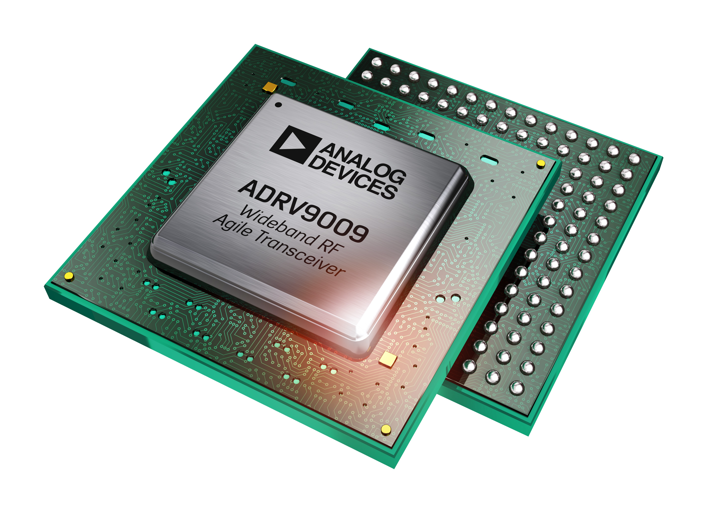
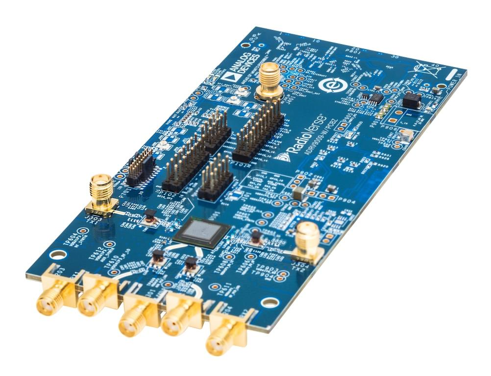

ADRV9009 & ADRV9008#
{kind=link}
The ADRV9009-W/PCBZ, ADRV9008-1W/PCBZ and ADRV9008-2W/PCBZ are FMC radio cards for the ADRV9009 and ADRV9008, respectively, a highly integrated RF Transceiver™. While the complete chip level design package can be found on the ADI web site, information on the card and how to use it, the design package that surrounds it, and the software which can make it work can be found here.
Table of Contents#
People who follow the flow that is outlined, have a much better experience with things. However, like many things, documentation is never as complete as it should be. If you have any questions, feel free to ask.
Use the board to better understand the ADRV9009/ADRV9008-1/ADRV9008-2
Linux Applications
Push custom data into/out of the ADRV9009/ADRV9008
Basic Data files and formats
Design with the ADRV9009/ADRV9008
Understanding the ADRV9009/ADRV9008
Hardware in the Loop / How to design your own custom BaseBand
Design a custom ADRV9009/ADRV9008 based platform
Linux software
Changing the VCXO frequency and updating the default RF Transceiver Profile
HDL Reference Design which you must use in your FPGA.
Additional Documentation about SDR Signal Chains - The math behind the RF
Help and Support
Videos#
Software Defined Radio using the Linux IIO Framework#
ADI Articles#
Four Quick Steps to Production: Using Model-Based Design for Software-Defined Radio